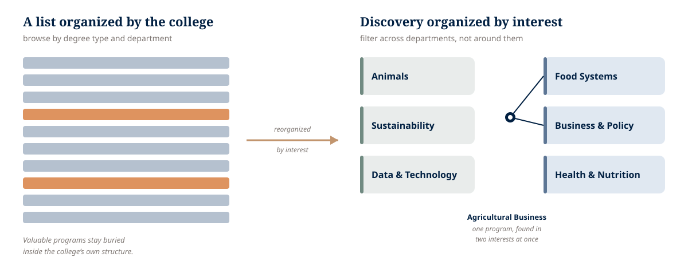

College of ACES, University of Illinois · 2022–2023
ACES Program Explorer
I turned a sprawling, department-organized academic catalog into an interest-based discovery system, helping prospective students find programs by what they cared about while giving the college a model that kept scaling as its offerings grew.
The Catalog One Experience Had to Unify
- 9
- Departments
- 126
- Program options
- 16 grew to 43
- Certificates absorbed
- 1
- Discovery system
Right Time. Right Place.

From a College’s Filing System to a Student’s Point of View
Students were trying to picture their future. The old experience showed them the college’s org chart. I flipped the model so a single program could be discovered by interest - across department lines - instead of staying buried in a degree-type list.

Students Explored by Interest, Not College Departments
The visible problem was a long list of majors, minors, certificates, and graduate programs, organized mostly by degree type and hard to use on a phone. The deeper problem was a mismatch: prospective students explore by what they care about, while the college is organized into 9 departments - so a student interested in business, food systems, or sustainability might never realize which department owned the right program, or that it existed at all.
That mismatch was getting more expensive by the year. As the catalog grew - certificates alone were climbing fast - a longer list would only bury more of the college’s strongest offerings inside its own structure.
I Reframed a Page Redesign Into a Discovery-System Problem
The ask sounded like “improve the program list.” I reframed it as “build a discovery model the college can grow with,” organized around one student question: what programs fit my interests?
There was no formal product manager, so I supplied that discipline myself - framing the problem, shaping the research, defining scope, and directing implementation - while also serving as UX design lead. To make the interest-based structure a real decision rather than my guess, I validated the taxonomy with card sorting and tree testing, and facilitated a related-programs mapping workshop where department heads and the Dean physically placed program cards to agree on genuine cross-department connections.

How the interest model was validated
- Closed card sorts against interest categories like Animals; Food Systems; Sustainability; Business, Economics & Policy; Data & Technology; and Health & Nutrition.
- Tree testing to check findability before build.
- Proxy participants, interns, advisor and recruiter input, and limited parent feedback - a practical sample, since the primary audience was largely under 18 and hard to reach.
- A related-programs workshop that turned an abstract political IA debate into concrete, stakeholder-owned connections.
The Research Caught a Insight the College’s Own Pages Missed
During tree testing, two programs behaved oddly: students expected them as majors, matching how the majors pages presented them, but that didn’t reconcile with how the departments described their own degrees. I followed the signal into supplemental conversations with Admissions - and learned the two programs were officially still minors, published as majors while a multi-year university reclassification worked through governance.
That is the part that proves the method. A rigorous discovery process surfaced a real content-accuracy gap the college didn’t know it had - something no amount of visual polish would have caught. I wasn’t relabeling a list; I was building a process that could tell the organization something true about itself.
What I Designed and Led
This was hands-on authorship, not delegated direction. I designed every wireframe and interaction decision, then directed two engineers through implementation.
- the full responsive Program Explorer - program cards, filtering, sorting, and in-experience detail views
- interest-based discovery and cross-department related-programs surfacing
- Direct Apply and Advisor Contact calls to action
- accessibility built into the interaction model (WCAG 2.1 AA), including treating each card as a single element to cut screen-reader verbosity
- the structured Drupal content model so one program record could power the whole experience
- the related-programs workshop, stakeholder alignment across 9 departments, and launch coordination
One Program Record, the Whole Experience
The Explorer was a content system, not a one-off page. I defined a structured Drupal model so a single program record supplied its card, its filters and sorting, its detail view, its related-program links, and its calls to action - which is what let the catalog keep growing without hand-maintaining disconnected pages.

Diagram details: structured content model
The diagram shows how one structured Drupal record supported multiple parts of the student experience.
- Each program record supplied the content for program cards and detail views.
- Structured fields powered filters, sorting, degree-type display, and interest-area relationships.
- Related-program mappings connected each program to other relevant options across departments.
- Centralizing the content reduced duplicated maintenance and let the Explorer scale as programs changed.
Outcome: A Discovery Model That Kept Scaling
The strongest proof the model worked is that the organization kept using it. It shipped in roughly 6–8 months and stayed live in essentially the same public-facing form years later - and it absorbed real catalog growth without a redesign: certificate offerings climbed from 16 to 43 inside a catalog that reached 126 program options, and the structured model took the growth in stride.
Directional signals. A saved tree-testing task showed 96% success and 96% directness for the interest-based IA, and a GA4 path report showed 11,055 Explorer sessions with users moving deeper into program areas. Both point the same way; neither is a controlled study. The ACES idea also later informed a shared program/course repository between the College of Education and Gies College of Business.
What I don’t claim. Institutional privacy rules prevented tying Explorer usage to applications or enrollment, so I make no conversion claim. If I were setting the measurement plan today, I’d pair UX signals - task success, mobile completion, filter usage, related-program click-through - with operational ones like reduced advising confusion and avoided redesign work as the catalog grew.